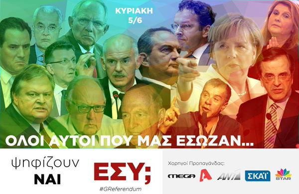

<div class="cbp-l-inline">
    <div class="cbp-l-inline-left">
        
    </div>

    <div class="cbp-l-inline-right">
        <div class="cbp-l-inline-title">Οι &#34;σωτήρες&#34; ψηφίζουν ΝΑΙ, εσύ; #LemeOxi</div>
        <br/>
        <ul class="social-icons">
          <a href="javascript:;" onclick="window.open('https://www.facebook.com/sharer/sharer.php?u=http://www.leme-oxi.gr/karta/5/', '_blank', 'height=400,width=800,left=250,top=100,resizable=yes', true); return false;">
            <i class="icon-custom rounded-x icon-bg-blue fa fa-facebook"></i>
          </a>

          <a href="javascript:;" onclick="window.open('https://twitter.com/intent/tweet?url=http://www.leme-oxi.gr/karta/5/&text=%CE%9F%CE%B9%20%22%CF%83%CF%89%CF%84%CE%AE%CF%81%CE%B5%CF%82%22%20%CF%88%CE%B7%CF%86%CE%AF%CE%B6%CE%BF%CF%85%CE%BD%20%CE%9D%CE%91%CE%99%2C%20%CE%B5%CF%83%CF%8D%3B%20%23LemeOxi;', '_blank', 'height=400,width=800,left=250,top=100,resizable=yes', true);return false;">
            <i class="icon-custom rounded-x icon-bg-blue fa fa-twitter"></i>
          </a>
          <a href="karta/5/index.html">
            <i class="icon-custom rounded-x icon-bg-blue fa fa-link"></i>
          </a>
        </ul>
    </div>
</div>
